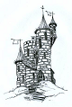

87
J'avance un peu plus vers le bureau du magicien. « Dites moi ce que vous tramer de mal dans cette tour! » Il se lève et avance aussi vers moi. Il place ses mains devant lui et les fait bouger avec des gestes rythmés. Une boule de feu se forme entre ses mains! Avec la lumière projetée par les flammes, je remarque dans un coin de la pièce, une armure. Cette armure à un dessin de dragon sur le devant! En la voyant un souvenir me revient! Mais c'est mon armure! Alors le magicien me dit: « Hé oui! C'est bien ton armure. Et elle est à moi maintenant. Comme le sera bientôt le reste de ton équipement! » Je fonce vers lui avec un grand cri de guerre!
Il s'agit d'un défi de bataille et la difficulté est de 9. Pour le réussir tu dois lancer 2 dés à six faces et additionner le résultat des dés. Si mon épée est magique, tu peux lancer trois dés. |
|